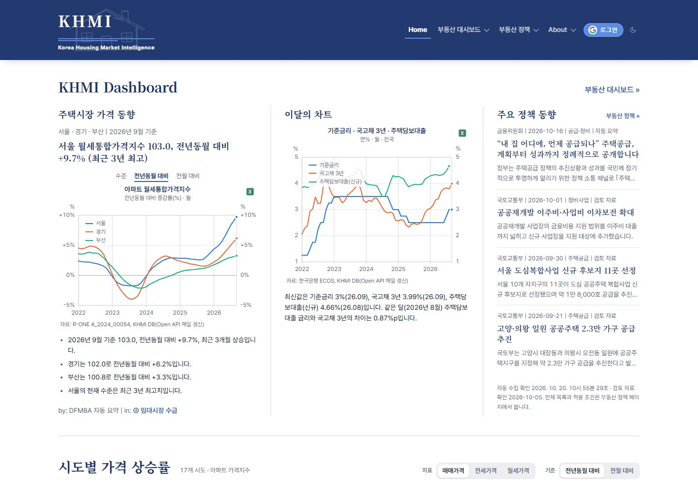

공식 발표를 모으고
국토교통부·행정안전부·금융위원회의 발표를 수집합니다.
KOREA HOUSING MARKET INTELLIGENCE
흩어진 공공 통계와 공식 정책 발표를
하나의 흐름으로 연결하는 KHMI

권태혁 · 노경수 · 박민영 · 박준우
만든 이유 → 화면 시연 → 기술과 데이터 → 다음 단계
저희 팀은 한국 부동산 시장을 손쉽게 파악할 수 있도록 KHMI를 만들었습니다. 먼저 업무에서 느낀 불편과 정책 정보를 읽는 어려움을 말씀드리고, 실제 화면을 보여드리겠습니다. 이후 이번 수업의 중심인 API, 데이터베이스와 클라우드 구성을 설명하겠습니다. 참고 발표 자료의 기술 내용을 현재 배포 코드에 맞춰 업데이트했습니다.
WHY 01 / 업무에서 시작한 문제
팀원 모두 업무에서 부동산 시장과
직접 또는 간접으로 연결되어 있습니다.
가격만으로 판단하기 어렵고
인구·공급·금리·거래를 함께 봐야 하며
자료마다 지역·단위·공표 주기가 다릅니다.
“분석하기 전에, 자료를 찾고
맞추는 데 시간을 쓰고 있었습니다.”
필요한 데이터를 한곳에
같은 기준으로 비교
찾는 시간을 줄이고, 시장을 읽는 데 집중할 수 있는 사이트가 필요했습니다.
팀원 모두 업무상 부동산 시장을 직간접적으로 접합니다. 가격 하나만 확인하는 것이 아니라 금리, 인구, 공급, 거래를 함께 보려면 여러 기관을 방문해야 했습니다. 파일을 내려받고 지역과 시점을 맞추는 과정이 반복됩니다. 저희가 자주 사용하는 공공 데이터를 먼저 모아 동일한 기준으로 비교할 수 있게 하자는 것이 출발점입니다. 팀원의 구체적인 직무나 경력은 이 자료에서 임의로 소개하지 않습니다.
WHY 02 / 숫자와 함께 읽어야 할 맥락
국토교통부·행정안전부·금융위원회의 발표를 수집합니다.
자동 발췌와 검토 자료를 구분하고, 원문으로 연결합니다.
새 발표 모니터링과 주요 정책 변화 연표를 함께 봅니다.
정량 데이터의 변화 옆에, 공식 정책이라는 맥락을 놓았습니다.
자동 요약은 원문 문장 발췌입니다. 정책의 시장 영향이나 시행 여부를 추정하지 않습니다.
뉴스는 변화를 빠르게 알려주지만 강한 제목에 집중하다 보면 실제 대상과 적용 조건, 이전 정책과의 연결을 놓치기 쉽습니다. 그래서 공식 발표를 모으고, 발표일과 원문을 확인할 수 있도록 만들었습니다. 최근 발표는 자동 수집하고, 주요 전환점은 검토한 정책 히스토리로 제공합니다. 자동 요약은 생성형 AI가 해석한 내용이 아니라 원문에서 추린 문장입니다. 발표일이 지났다고 시행 중이라고 단정하지 않습니다.
FRONTEND / 먼저, 서비스로 보겠습니다
Vercel에 배포한 웹사이트에 개인 도메인 www.khmi.kr을 연결했습니다.
이 장에서 실제 사이트 시연을 먼저 진행합니다. 왼쪽 버튼은 실제 운영 화면 캡처를 전환하며, 시연 화면 열기를 누르면 새 탭에서 서비스가 열립니다. 홈의 시장 동향과 지도를 보고 대시보드에서 지역 두세 곳, 기간, 수준과 전년동기 대비를 바꿔봅니다. 정책 화면에서 자동 요약 카드와 원문, 정책 히스토리를 보여줍니다. 프론트엔드는 이번 학기의 중심 평가 대상은 아니지만 데이터가 사용자에게 전달되는 모습을 먼저 보여드리겠습니다. 캡처는 2026년 10월 20일 기준이며 시연 시점의 데이터는 달라질 수 있습니다.
FOR WHOM / 누구를 위한 서비스인가
가격·거래·금리와 정책을 함께 확인
지역 비교, 출처 확인, CSV·엑셀 내려받기
인구·공급 지표와 정책 변화를 교차 확인
BEGINNER FRIENDLY
준전문가의 분석 도구이면서, 입문자도 따라올 수 있는 길을 제공합니다.
기본 이용자는 부동산 지표를 해석할 수 있는 실무자와 기관입니다. 다만 실수요자와 입문자도 접근할 수 있어야 한다고 생각했습니다. 부동산 기초에는 용어 설명뿐 아니라 매매, 전세, 월세의 계약 흐름과 개발 및 기관 투자 절차를 정리했습니다. 학습 자료와 지표 화면을 연결해 처음 보는 수치를 스스로 이해할 수 있도록 했습니다. 내려받기는 Google 로그인 후 이용할 수 있고 화면 열람은 로그인 없이 가능합니다.
AUTHENTICATION / 쉬운 로그인, 분리된 역할
Google 로그인 선택
Google OAuth · PKCE
사용자 인증·동의
지표·차트 열람, 지역 비교, 정책 확인, 기초 학습
CSV·엑셀 내려받기, 로그인·다운로드 이용 기록 저장
이메일·이름 등 인증 정보는 Supabase Auth가 관리합니다. 이용 기록에는 사용자 ID를 사용하고, RLS로 본인 기록 추가만 허용합니다.
로그인은 Supabase Auth의 Google OAuth로 구현했습니다. 브라우저에서 로그인 버튼을 누르면 Supabase를 통해 Google 인증을 거치고, 인증 세션이 사이트로 돌아옵니다. 자체 비밀번호 시스템을 만들지 않고 관리형 인증을 활용했습니다. 열람은 누구나 가능하고 데이터 다운로드는 로그인 사용자에게 제공합니다. 지표 조회는 FastAPI를 거치지만 인증과 로그인·다운로드 기록 추가는 브라우저가 Supabase에 직접 연결하며, 익명 지표·정책 조회 기록은 FastAPI로 전달합니다. 이 경로의 차이는 뒤의 전체 아키텍처에서도 구분합니다.
QUANTITATIVE DATA / 4개 Open API 체계
51화면 제공 변수
49API 자동 갱신 대상 변수
17비교 가능한 시·도
지표별 제공 범위·공표 주기는 다릅니다.| Open API | 대표 데이터 | 읽고 싶은 시장의 모습 |
|---|---|---|
| 한국부동산원R-ONE · JSON | 매매·전세·월세지수, 전세가율, 수급동향 | 가격 변화와 임대시장 수급 |
| 한국은행ECOS · JSON | 기준금리·대출금리, 가계대출, 물가·경기 | 자금 조달과 거시 환경 |
| 통계청KOSIS · JSON | 인구·세대·이동·고용, 인허가·착공·준공 | 지역의 수요와 공급 기반 |
| 국토교통부실거래 API · XML | 아파트 매매·전월세 신고 자료 → 월별 건수 | 실제로 발생한 거래의 움직임 |
2026.10.20 코드·운영 상태 기준. KOSIS는 여러 작성기관의 통계를 제공합니다. API 갱신 대상이 아닌 2개 변수는 기존 전처리 패널을 유지합니다.
정량 데이터는 네 개의 Open API 체계에서 가져옵니다. 부동산원에서는 가격과 수급, 한국은행에서는 금리와 금융 환경, KOSIS에서는 인구와 공급 관련 통계, 국토부에서는 실거래 신고 자료를 받습니다. 화면의 51개 변수 중 자동 갱신 대상은 49개입니다. 나머지 2개는 기존 전처리 패널 값을 유지합니다. KOSIS라는 수집 창구와 실제 통계 작성기관은 구분해야 합니다. 모든 지표가 17개 시도와 동일 기간으로 제공되는 것은 아니며 전국 공통 금리, 일부 서울 구 단위 계열도 있습니다.
PROCESSING / 받은 값을 읽을 수 있는 형태로
차트와 해설에서 보여주는 것
공표된 기준기간 값으로 비교하고,
출처·보완 방법·잠정값을 함께 표시합니다.
지수·금액 등 해당하는 계열에 적용하며, 비율·금리 계열은 지표 성격에 맞춰 해석합니다.
관측한 사실을 설명합니다. 자동 해설과 가격 예측은 구분합니다.
가져온 데이터를 그대로 나열하지 않고 지역과 기간, 단위를 정리합니다. KOSIS의 누계 자료를 월별 값으로 바꾸거나 연령대 합산과 비중을 계산하고, 실거래는 해제를 제외한 건수로 집계합니다. 같은 변수·지역·시점의 값은 바뀐 경우에만 갱신합니다. 화면은 여섯 동인으로 분류하고 최신값, 전년동기 대비, 최근 방향과 범위 내 위치를 설명합니다. 실거래 최근 3개월은 신고와 해제 시차로 바뀔 수 있어 잠정값으로 표시합니다. 해설은 원인이나 전망을 만들어내지 않습니다.
QUALITATIVE DATA / 공식 발표를 같은 흐름으로
주택·공급·임대차 발표
지방·주거 관련 발표
대출·가계부채·금융 정책
왜 RSS인가?
기관마다 페이지 구조와 접근 제약이 달라, 제공되는 공식 피드로 발표 목록을 안정적으로 확인합니다.
원문을 읽지 못하면?
임의로 요약하지 않고 다음 실행에서 재시도합니다. 공식 본문·첨부 PDF를 제한적으로 읽습니다.
크롤링 원칙은?
robots.txt 확인 결과 3곳 모두 허용(2026.10.20) · 6시간마다 기관별 목록 1회 + 원문 최대 6건 · 같은 기관 사이트 안에서만 읽습니다.
추가 AI API 비용 없이, 출처로 돌아갈 수 있는 정책 요약을 만듭니다.
정책 수집원 세 곳이 모두 RSS는 아닙니다. 국토부와 행안부는 공식 RSS를 사용하고 금융위는 공개 보도자료 HTML 목록을 읽습니다. 홈페이지별 구조와 접근 제약 때문에 피드를 우선 활용했습니다. 수집 후보 중 주택과 정책 변화에 관련된 발표를 선별하고 공식 본문이나 첨부 PDF에서 최대 세 문장을 추립니다. 별도 AI API 비용은 없습니다. 읽을 수 없는 원문은 다음 주기에 재시도하며, 정책을 전수 조사하거나 모든 자료를 소급 수집하는 구조는 아닙니다. 자동 요약 생성일과 사람이 검토한 날짜도 구분합니다.
AUTOMATION / 실행은 예약하고, 수집은 서버에서
정량 지표
09:40 KST · 매일
실거래 수집 시작 → 기관별 API 확인
→ 변경분 반영 → 화면용 캐시 준비
40 0 * * *UTC 기준 cron정책 발표
6시간 마다
발표 목록 수집 → 관련 정책 선별
→ 원문 발췌 → 자동 요약 저장
17 */6 * * *KST 03:17 · 09:17 · 15:17 · 21:17매일 새 수치를 만드는 것이 아니라, 기관의 새 공표분과 수정치를 확인합니다.
실제 실행 시각은 GitHub Actions 대기열에 따라 늦어질 수 있습니다. 실패 기록과 마지막 성공 시각을 따로 확인합니다.
정량 수집은 매일 한국시간 오전 9시40분으로 예약했습니다. 정책 수집은 여섯 시간 간격입니다. GitHub Actions 러너는 관리자 API를 호출하는 역할이고, 외부 기관 호출과 저장은 Render의 FastAPI 서버가 맡습니다. 오래 걸리는 실거래 수집은 백그라운드 작업과 진행 확인 API로 처리합니다. 수집 결과에는 받은 행 수와 실제 바뀐 행 수를 기록합니다. 예약이 곧 원천 통계의 일별 공표를 의미하는 것은 아닙니다. 실패 시 기존 자료를 보존하고 상태와 재시도 여부를 확인할 수 있습니다.
API CONTRACT / 화면과 다른 프로그램이 함께 쓰는 인터페이스
/api/indicators/{var}변수·지역·기간 → 시계열 값과 출처
/api/policies정책 목록 → 자동 요약·검토일·수집 결과
/api/usage기간·상위 개수 → 이용 횟수·다운로드 순위
/api/policies/refresh관리자 인증 → 수집·요약 실행 결과
GET /api/indicators/V043
?regions=전국
&start=2026-07API는 요청 방식과 입력값, 응답 형식을 Swagger에 문서화했습니다. 예를 들어 V043 기준금리를 전국, 2026년7월 이후 조건으로 조회하면 시점 배열과 값 배열, 단위, 출처, 수집 시각이 JSON으로 반환됩니다. 실제 응답 링크는 조회만 하므로 시연에 사용할 수 있습니다. 정책과 이용 통계도 같은 방식으로 제공합니다. 데이터를 읽는 GET과 데이터를 수집해 갱신하는 관리자 POST를 분리했고, 관리자 토큰은 프론트엔드나 발표 자료에 넣지 않습니다. 부록에는 주요 API의 입력 범위와 응답 필드를 정리했습니다.
DATABASE / SUPABASE POSTGRESQL
정량 · 6개 테이블
1 → N FK
수집 로그 · 화면 계열과 값
실거래 월별 집계·진행 기록
정성 · 5개 테이블
1 → N / 1 → 0..1 FK
출처별 상태
검토 콘텐츠 스냅샷
이용 기록 · 2개 테이블
1 → N FK
usage_events: 익명 지표·정책 조회
기간별 집계 · 다운로드 순위
(variable_id, region, period)동일 키의 값 비교 → 새 값 추가 / 바뀐 값 갱신 / 같은 값 건너뛰기DB는 정량 6개, 정성 5개, 이용 기록 2개로 애플리케이션 테이블이 총13개이며 Supabase의 인증 영역은 별도입니다. 정량 관측값은 변수, 지역, 시점을 복합 기본키로 삼아 중복 저장을 막습니다. 화면용 계열과 원자료, 수집 로그도 구분합니다. 정책 문서에는 여러 수정 이력이 연결되지만 자동 요약은 문서당 최대 한 건입니다. 자동 요약을 검토 JSON과 별도로 보관해 재배포해도 유지되도록 했습니다. 이용 기록은 인증 사용자와 외래키로 연결하고 RLS를 적용합니다. 모든 논리 연결이 FK는 아니며 부록에서 실제 FK와 코드상 연결을 구분했습니다.
OPERATIONS / 무엇이 쓰이는지 관찰하며 운영
방문 분석
페이지 방문과 유입을 파악하는 기본 분석
실제 데이터 이용
지표 다운로드·차트 열람·정책 상세·원문 클릭 집계
상세 이용 통계 보기 ↗낮은 비용으로 시작하기
차트는 50% 이상 2초 표시 시, 정책은 상세 펼침·원문 클릭 시 기록합니다. 조회는 탭별 중복을 제외하며 계측 도입 이후부터 집계합니다.
방문 통계는 Vercel Web Analytics에 연결했고, 로그인과 다운로드는 Supabase activity_logs에 별도로 기록합니다. 공개 usage API는 개인을 식별하는 정보 없이 숫자로 집계합니다. 차트 노출과 정책 상세 열람·원문 클릭은 로그인 여부와 관계없이 usage_events에 별도로 기록합니다. 이 조회 계측은 동일 탭에서 같은 대상·동작을 한 번만 세며 사람 수나 실제 정독을 뜻하지 않습니다. 추적 거부 설정이나 네트워크 오류로 누락될 수 있습니다. 비용 측면에서는 특정 저장소가 가장 싸다고 단정하기보다 건수 집계, 변경분 저장, 캐시로 저장량과 반복 호출을 줄인 점을 설명하겠습니다.
SERVICE ARCHITECTURE / 조회와 수집, 두 흐름으로 이해하기
A 사용자 조회 요청은 아래로, 응답은 위로
B 자동 수집 예약 실행으로 새 자료 반영
www.khmi.kr · 차트 · 정책 · 다운로드
Vercel에서 HTML·CSS·JavaScript 화면을 받음화면의 /api/* 요청을 Render로 전달
조회 요청 처리 + 외부 자료 수집·가공
사용자에게 DB 값을 반환하고, 수집 결과는 DB에 저장지표 · 실거래 건수 · 정책 · 이용 기록 보관
수집·가공한 데이터를 저장하고, 바뀐 값만 갱신B 자동 수집
방문자가 없어도 데이터는 갱신됩니다.Actions는 실행을 요청하고,
Render가 자료를 모아 DB에 저장합니다.
정량 매일 09:40 KST · 정책 6시간마다
Render의 관리자 수집 API 호출 → 수집 시작Open API 4개: 부동산원 · 한국은행 · 통계청 · 국토부
정책 3곳: 국토부·행안부 RSS / 금융위 웹 크롤링DFMBA 전처리본 → Supabase DB
과거 데이터로 시작한 뒤, 예약 수집으로 계속 갱신홈·대시보드는 DB·캐시를 조회하고, 예약 수집은 DB를 갱신합니다.
왼쪽 A는 사용자가 화면을 볼 때의 흐름입니다. Vercel에서 받은 화면이 같은 도메인의 api 경로로 데이터를 요청하면 CDN이 캐시를 확인하고, 필요한 요청을 Render의 FastAPI로 전달합니다. 서버는 Supabase PostgreSQL에서 저장값을 읽고 응답은 역방향으로 돌아옵니다. 오른쪽 B는 방문자가 없어도 실행되는 수집입니다. 1번 GitHub Actions는 정량 매일 09:40 KST, 정책 6시간마다 Render의 관리자 수집 API를 호출합니다. 2번 실제 외부 API 호출과 RSS·웹 크롤링, 자료 가공은 Render가 담당합니다. 3번 가공한 값은 아래의 Supabase DB에 저장합니다. Actions가 외부 기관이나 DB를 직접 호출하는 구조는 아닙니다. 오른쪽 아래는 서비스를 시작할 때 DFMBA 전처리 데이터를 DB에 적재한 보조 경로입니다. 초록색 줄의 로그인과 로그인·다운로드 기록은 브라우저에서 Supabase로 직접 연결됩니다. 새 익명 지표·정책 조회 기록은 API를 통해 Render가 DB에 저장합니다. 홈·대시보드의 기본 조회는 DB와 캐시를 사용하며, 일부 개별 지표 API에는 값이 없거나 오래되었을 때 외부 수집을 보조적으로 실행하는 예외가 있습니다. 지표 캐시의 기본 시간은 브라우저 5분, CDN 1시간, 서버 메모리 10분이며 정책 API 전체에 동일하게 적용되는 것은 아닙니다.
BUSINESS MODEL / 검증할 가설
01
지표·정책·기초 학습
수집 이력과 이용 데이터 축적
02
조회·다운로드 수요를 반영한
이달의 차트, 관심 지역·지표
03
관심 지역·프로젝트에 맞춘
정량 + 정성 데이터 해석
04
의미 있는 예측 성능과
실무 수요가 확인된 기능
유료화의 출발점은 기능의 수가 아니라, 반복해서 찾는 정보와 검증된 효용입니다.
현재 ‘이달의 차트’는 금리 3종 비교로 고정되어 있습니다. 이용량 기반 선정·맞춤 리포트·예측 모델·유료화는 향후 계획입니다.
우선은 데이터를 계속 쌓고 실제로 사람들이 필요한 정보를 확인하려고 합니다. 현재 이달의 차트는 기준금리, 국고채3년, 주택담보대출 금리 세 종류로 고정되어 있습니다. 앞으로 조회와 다운로드 로그를 바탕으로 관심 높은 차트를 선정하고 관심 지역이나 프로젝트 맞춤 리포트를 검토할 수 있습니다. 정량과 정성 자료가 결합되면 단순한 수치 전달보다 실무 맥락을 제공할 수 있습니다. 예측 모델이 의미 있는 성능을 보이고 수요가 확인된다면 일부 기능을 유료화할 수 있다는 사업 가설이며 아직 구현된 수익 모델은 아닙니다.
WHAT'S NEXT / 데이터를 모으는 기반에서, 판단을 돕는 도구로
공공 데이터 자동 수집
정책 발췌 · API · DB · 상세 이용 통계
조회·다운로드 수요 분석
인기 지표 선정 · 관심 지역 기능
공표 시차·수정치를 고려한 백테스트
기준 모형 대비 성능과 실무 활용 검증
흩어진 데이터에서, 함께 읽는 시장으로. KHMI
현재는 공공 데이터를 안정적으로 수집하고 정책과 함께 제공하는 기반을 만들었습니다. 지표 다운로드·차트 열람·정책 관심도를 상세 이용 통계에서 확인할 수 있습니다. 다음에는 이 기록을 인기 지표 선정과 관심 지역 기능에 활용하겠습니다. 이후 데이터 공표 시차와 수정치, 정보 누출을 고려해 예측 모형을 학습하고 시간 순서대로 검증할 계획입니다. 단순한 기준 모형보다 나은지, 실제 업무에 도움이 되는지부터 확인하겠습니다. 이것이 검증되면 맞춤 리포트와 선택적 유료 기능으로 연결할 수 있습니다. 서비스와 코드, API와 DB 문서는 아래 링크와 부록에서 확인할 수 있습니다.
APPENDIX A / API 설명 문서
기본 주소 https://www.khmi.kr/api · 응답 JSON · 전체 명세는 Swagger ↗
| 요청 · 기능 | 주요 입력 | 응답 핵심 필드 |
|---|---|---|
GET /indicators제공 변수·수집원 목록 | 없음 | variables, sources, refresh_hours |
GET /indicators/{var}개별 시계열 | var ID / regions 쉼표 목록start YYYY-MM / scope 지역 단위 | var, label, unit, periods, series, |
GET /indicators/bundle복수 지표 묶음 | set=live|all, vars, regions, start | metrics, regions, missing, panel |
GET /indicators/status수집 상태·로그 | limit 1~300, 기본 50 | 변수 상태 · 수집 로그 · 패널 규모 |
GET /policies검토 자료 + 자동 요약 | 없음 | policies, automation, reviewed_at, |
GET /policies/monitor새 발표 후보 | limit 1~300, 기본 100 | items, sources, last_checked_at |
GET /usage익명 집계 통계 | days 1~365, 기본 30top 1~50, 기본 10 | available, totals, daily, downloads |
POST /indicators/refresh정량 수집 · 관리자 | X-Admin-Token 헤더source, vars, force | 출처별 수집 결과 · 변경 여부 |
POST /policies/refresh정책 수집·요약 · 관리자 | X-Admin-Token 헤더 | status, sources, briefs |
기타: /health, /knowledge, /policies/history, 실거래 작업 시작 POST /indicators/rtms/collect 및 상태 GET /indicators/rtms/job(관리자 인증).
질의응답에서 사용할 API 설명 부록입니다. 경로는 모두 사이트의 api 접두사를 포함해 호출합니다. 개별 시계열과 묶음 조회, 수집 상태, 정책 및 이용 통계의 입력 범위를 정리했습니다. 실거래 작업 시작과 진행 확인은 관리자 API이며 공개 화면에서 실행할 수 없습니다. 요청 조건과 실제 응답은 Swagger에서 확인할 수 있습니다.
APPENDIX B / DB 테이블 문서 · 정량
| 테이블 · 역할 | PK | 주요 컬럼 · FK |
|---|---|---|
indicator_variables수집 변수 정의·상태 | id | label, source, freq, unit, last_period, |
indicator_observations정규화 관측값 | variable_id | value, fetched_atFK variable_id → indicator_variables.id |
indicator_fetch_logs수집 1회당 기록 | id | started_at, duration_ms, status,FK variable_id → indicator_variables.id |
indicator_series화면용 계열 정의 | id | var_id, scope, label, unit, periods, |
indicator_series_values화면용 계열 값 | series_id | valueFK series_id → indicator_series.id |
rtms_progress실거래 집계·수집 진행 | kind | count_all, count_monthly, count_jeonse, |
원값 → 화면 계열은 전처리 코드로 연결합니다. indicator_series.var_id는 선언된 FK가 아닙니다.
정량 테이블 상세입니다. 복합키는 같은 변수 또는 계열의 같은 지역과 시점이 중복되지 않도록 합니다. 실거래는 유형, 시군구 코드, 계약연월의 조합으로 집계 결과와 진행 상태를 관리합니다. indicator_series의 var_id는 코드에서 연결하는 논리 관계이며 DB 외래키가 아닙니다. 화살표로 표시한 FK만 실제 스키마의 제약입니다.
APPENDIX C / DB 테이블 문서 · 정성·이용
| 테이블 · 역할 | PK | 주요 컬럼 · 제약 |
|---|---|---|
content_snapshots검토 콘텐츠·자동화 상태 | key | content, content_hash, updated_at |
policy_source_states기관별 수집 상태 | id | last_checked_at, last_success_at, |
policy_documents수집한 발표 문서 | id | source_id, source_url, title, agency, / URL 유일 |
policy_document_versions문서 변경 이력 | id | FK document_id → policy_documents.id(document_id, revision) 유일 |
policy_briefs자동 요약 · 문서당 최대 1건 | document_id동시에 FK | FK document_id → policy_documents.idcontent, algorithm_version, status, |
activity_logs로그인·로그아웃·다운로드 | id | FK user_id → auth.users.idoccurred_at, event, page, target, detail |
usage_events익명 지표·정책 조회 | event_id | session_id, event, target, occurred_at탭·동작·대상 조합 유일 / 계정 FK 없음 |
집계 뷰: v_activity_daily, v_download_by_target. source_id는 출처 코드에 대한 논리 연결입니다. activity_logs는 본인 행 추가만 허용하고, usage_events는 서버 API만 읽고 씁니다.
정책 테이블은 기관별 실행 상태, 수집 문서, 수정 이력, 자동 요약으로 나눕니다. 검토한 콘텐츠와 자동화 상태는 content_snapshots에서 별도 키로 관리합니다. policy_briefs는 document_id를 기본키와 외래키로 사용해 문서당 최대 한 요약을 저장합니다. activity_logs는 인증 사용자 ID로 연결하고, usage_events는 계정 연결 없이 탭별 임의 ID와 검증된 지표·정책 대상을 보관합니다. 일반 사용자가 전체 기록을 읽거나 수정하는 권한은 없습니다. 집계 뷰와 API를 통해 숫자만 제공합니다.